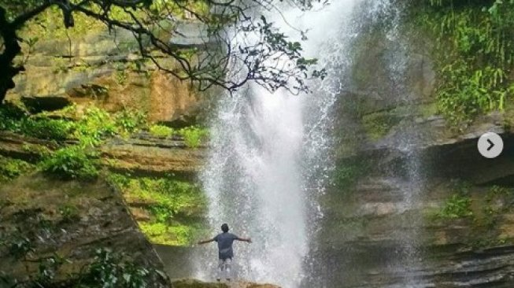

Jadi Ibu Kota Baru, Ini Pesona Wisata Penajam Paser Utara dan Samboja Kukar

Pusat pemerintahan baru Indonesia pada tahun 2024 direncanakan berpindah ke Samboja di Kutai Kartanegara dan Sepaku di Penajam Paser Utara.
Direncanakan ibu kota baru akan memiliki luas sekitar 180.000 hektar atau tiga kali luas Jakarta hari ini.
Lantas, apa saja pesona wisata kedua wilayah yang akan jadi pusat pemerintahan baru tersebut? Berikut Suara.com himpun beberapa di antaranya.
Membentang seluas 3.333 kilometer persegi, kawasan Penajam Paser Utara, dihuni sekitar 168 ribu warga.
Layaknya berbagai kawasan di Kalimantan, kawasan Penajam Paser Utara dihuni Suku Dayak, Suku Banjar, Suku Jawa dan Suku Bugis.
Kawasan pesisir yang berbatasan langsung dengan Selat Makassar ini memiliki beragam makanan khas berbahan seafood macam abon kepiting hingga amplang.
Para wisatawan juga dapat menikmati pesona destinasi wisata terpopuler di Penajam Paser Utara, macam Pantai Tanjung Jumlai, Air Terjun Tembinus, dan Pantai Corong.
Untuk menyambangi Penajam Paser Utara, kita harus bertolak sekitar 66 kilometer dari kota Balikpapan.